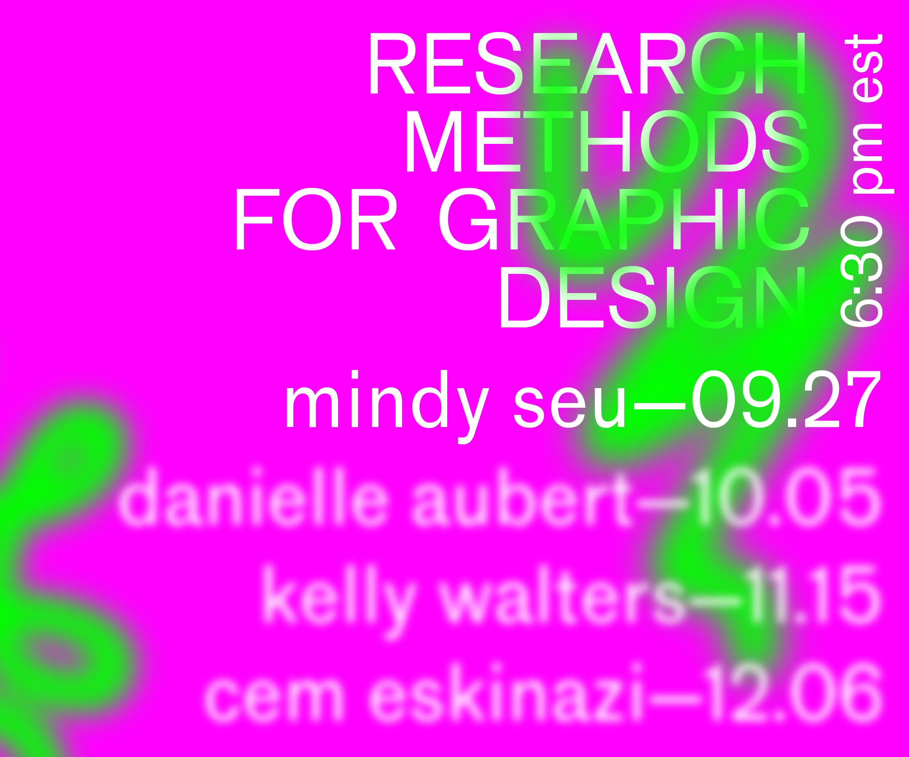
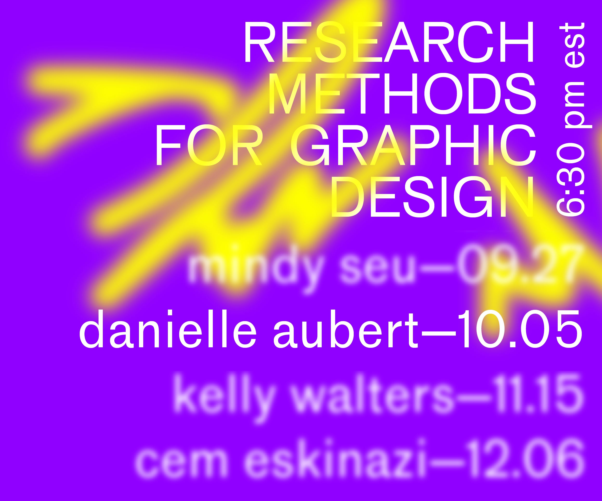
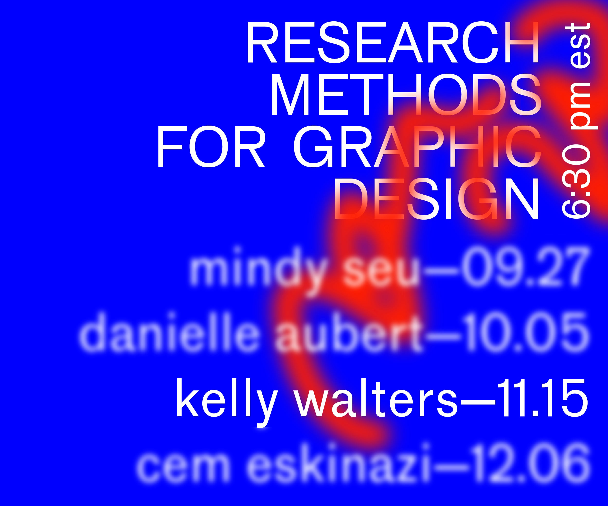
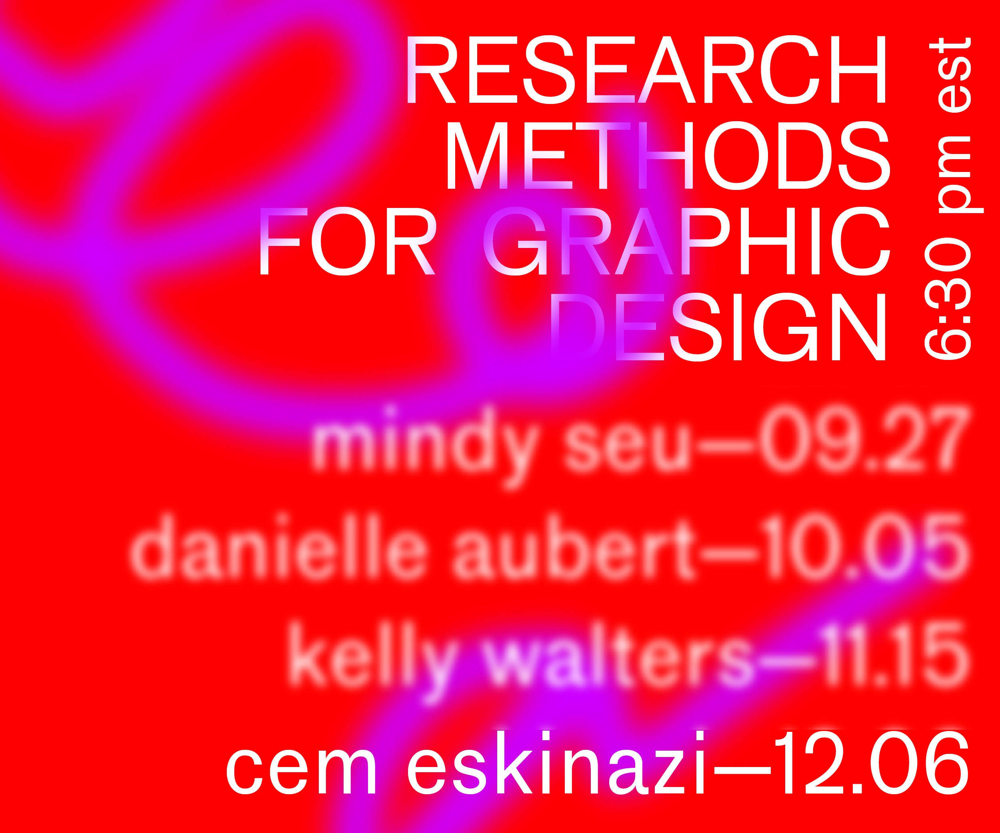

I was hired by the graphic design department at OCAD U to design a website & several digital posters for a lecture series about research as design process.
...
My intent was to create a concept that would be equally as interesting as email posters & as a website. Research and process both initialize a search for a something that aids in the maturation of one’s project. I visualized this idea with colour variations & the use of blur to mimic the drift of focus/out-of-focus that we seem to fluctuate through as we undergo making. As you move your mouse across the screen, colours paint the display; a click erases all strokes. Because the posters are not interactive, how the strokes interacted with the type was adjusted to maintain legibility all the whilst maintaining the visual theme.
My intent was to create a concept that would be equally as interesting as email posters & as a website. Research and process both initialize a search for a something that aids in the maturation of one’s project. I visualized this idea with colour variations & the use of blur to mimic the drift of focus/out-of-focus that we seem to fluctuate through as we undergo making. As you move your mouse across the screen, colours paint the display; a click erases all strokes. Because the posters are not interactive, how the strokes interacted with the type was adjusted to maintain legibility all the whilst maintaining the visual theme.

interactive website & its variations

poster for Mindy Seu's talk

poster for Danielle Aubert's talk

poster for Kelly Walter's talk

poster for Cem Eskinazi's talk
My intent was to create a concept that would be equally as interesting as email posters & as a website. Research and process both initialize a search for a something that aids in the maturation of one’s project. I visualized this idea with colour variations & the use of blur to mimic the drift of focus/out-of-focus that we seem to fluctuate through as we undergo making. As you move your mouse across the screen, colours paint the display; a click erases all strokes. Because the posters are not interactive, how the strokes interacted with the type was adjusted to maintain legibility all the whilst maintaining the visual theme.